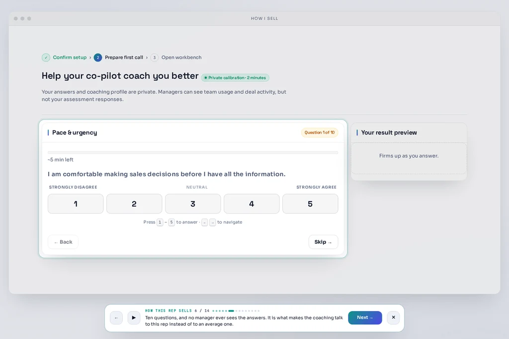

Live sales co-pilot / manager view
Same reps.
More of the pipeline,
closed.
PitchGenius listens to a live sales call and tells the rep what the buyer is feeling — and the exact sentence to say next — while there is still time to change the outcome.

before the call → know who you are about to talk to

01 / before the call
Walk in knowing what earns trust.
Buyer Blueprint gives the rep a profile of the person they are about to talk to: how they decide, what makes them trust you, and what makes them shut down.
- →Archetype and DISC-based personality read
- →Trust Triggers™ and Resistance Signals™
- →The likely objection, as a sentence

02 / during the call
The part that changes the outcome is still happening.
Conversation intelligence tells you what the buyer said. PitchGenius tells you what to say next, while there is still time to change the outcome.
“Before we get into the mechanics, Judd — who on your team is actually pushing for a change to how you handle these calls, and what are they hoping to see happen differently?”
the arithmetic a manager buys
One manager cannot sit on every call.
PitchGenius sits on all of them. It turns each live conversation into a coaching moment without asking the manager to be in two places at once.
one manager cannot sit on every one
the same reps close more of the same pipeline
new reps produce in weeks instead of quarters because coaching happens during the call
the pipeline starts from what buyers showed, not what reps hoped
one live card extends the manager’s attention across every call
the human layer stays human
The rep is not the problem to solve.
The rep is the person holding the conversation. PitchGenius is the quiet guide beside them — reading the room, not replacing the person in it.


for every rep
The guide adapts to the person holding the call.
Rep calibration tunes how the co-pilot talks to each seller. The answers are private. Managers see usage and deal activity. They do not see the rep’s answers.
- →Answer 10 questions once
- →Build a private coaching profile
- →Get advice that fits the person, not a template
human + AI means enhancement, not replacement
03 / after the call
Make the next call start with evidence.
Post-call analysis links claims to the moment they came from, surfaces MEDDPICC gaps, writes a buyer-readiness verdict, and gives the next call somewhere useful to begin.
- →Evidence-linked call summary
- →MEDDPICC gap analysis
- →Next Best Move recommendations
where the moment lives
What gets recorded is not the same as what gets changed.
plain answers
Keep the human part in view.
What is PitchGenius?
A desktop app that listens to a live sales call and tells the rep what the buyer is feeling and the exact sentence to say next.
Does it replace the rep?
No. PitchGenius makes a salesperson better at the human part of selling. The rep stays in the conversation.
Who sees a rep’s calibration answers?
The answers are private. Managers see usage and deal activity. They do not see the rep’s answers.
human + AI / built for the call
Give your reps the moment back.
Every closed contract you make as a seller is another piece of life you’re building for your family.
Book a pilot and see the live card on a real conversation.
Book a pilot